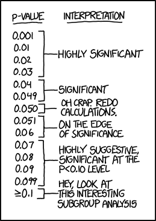
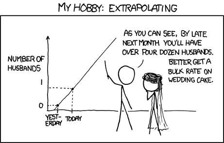
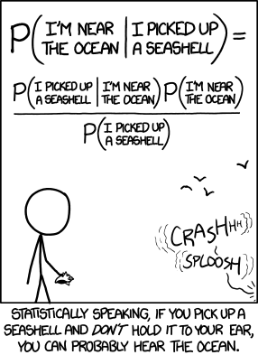
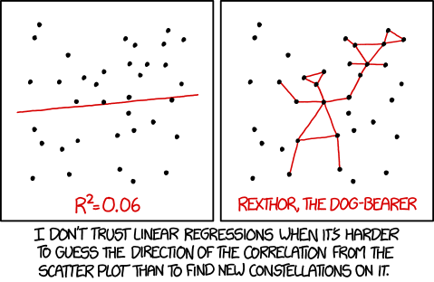
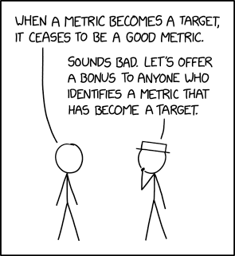
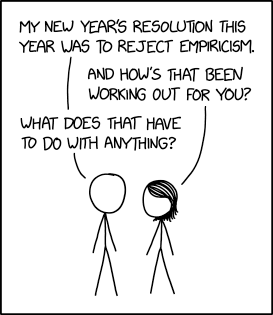
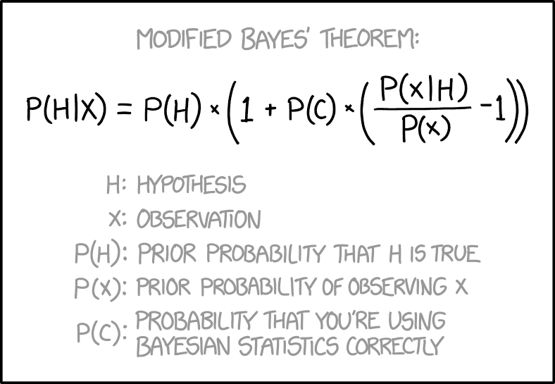
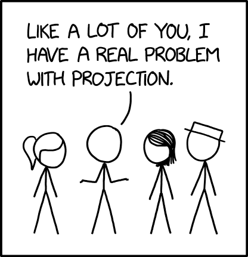
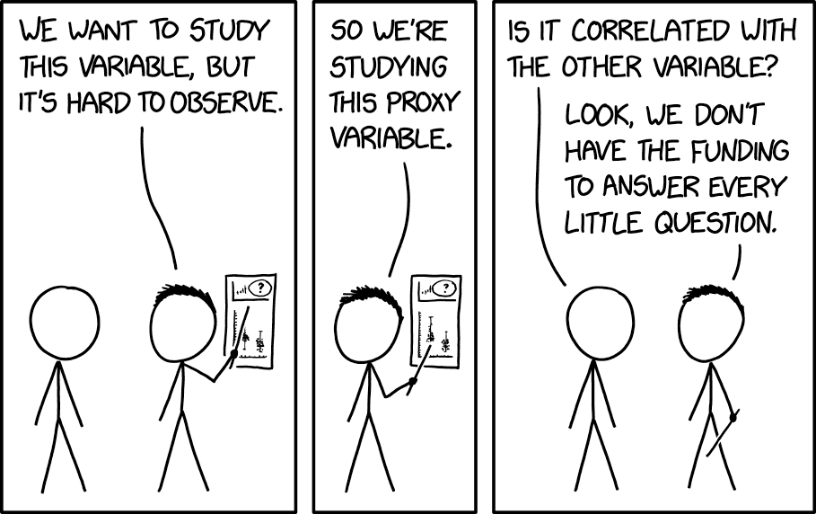

A significant part of my understanding of econometric concepts stems from the wonderful site of xkcd.com. Thank you, Randall Munroe!
Correlation
Conditional Risk

Significance

p-Values

0.05 level' and hope no one notices.">
Extrapolating

Bayes' Law

Frequentists vs. Bayesians

Linear Regression

Goodhart's Law

Empiricism

Modified Bayes′ Theorem

Projecting

Bayes′ Theorem
|(A|B)) represents the probability that you'll mix up the order of the terms when using Bayesian notation.")
Selection bias

Proxy variable
